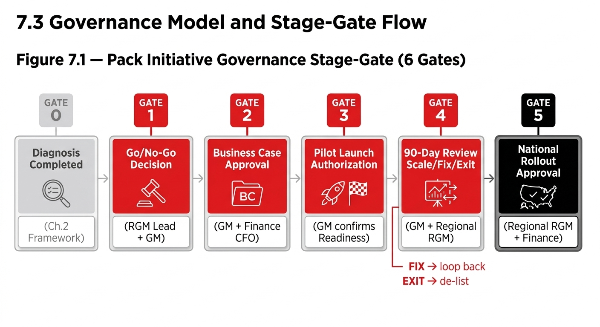

Chapter 09
Chapter 7 Governance & Ways of Working
Recruitment and Affordability pack decisions sit at the intersection of Consumer, Commercial, Finance, Supply Chain, Marketing, and Bottler interests. Without clear governance, three failure modes recur: (1) decisions are made at the wrong level — a country manager approves a new pack without Financial and Supply Chain sign-off, creating downstream cost overruns; (2) decisions are made too slowly — multiple sequential approvals add 3–6 months to what should be a 90-day pilot cycle; (3) decisions are reversed without clear criteria — a pack that is underperforming is extended rather than exited, consuming trade investment and distribution capacity.

Playbook Chapter
Chapter 7 Governance & Ways of Working
7.1 Why Governance Matters for Pack Decisions
Recruitment and Affordability pack decisions sit at the intersection of Consumer, Commercial, Finance, Supply Chain, Marketing, and Bottler interests. Without clear governance, three failure modes recur: (1) decisions are made at the wrong level — a country manager approves a new pack without Financial and Supply Chain sign-off, creating downstream cost overruns; (2) decisions are made too slowly — multiple sequential approvals add 3–6 months to what should be a 90-day pilot cycle; (3) decisions are reversed without clear criteria — a pack that is underperforming is extended rather than exited, consuming trade investment and distribution capacity.
The governance model in this chapter is designed to prevent all three. It assigns clear decision rights, defines approval levels, and creates a transparent stage-gate process that moves at commercial speed without bypassing financial and operational safeguards.
7.2 Regional vs. Local Decision Rights Matrix
Decision | Market RGM Lead | Country GM / Commercial Director | Regional RGM Lead | Global RGM CoE | Finance CFO |
|---|---|---|---|---|---|
New pack pilot (in business case boundary) | Recommends | APPROVES | Informed | Informed | Signs off NPV |
New pack national rollout | Recommends | Recommends | APPROVES | Informed | APPROVES budget |
Pack Exit decision | Recommends | APPROVES | Informed | Informed | Informed |
EPP / RSP change >5% | Recommends | APPROVES | Informed | Informed | Signs off margin impact |
Trade investment >market threshold | Recommends | Recommends | N/A | N/A | APPROVES |
New pack type (format not in current portfolio) | Recommends | Recommends | APPROVES | APPROVES | Signs off VC analysis |
Case Library submission (replication) | SUBMITS | Endorses | Reviews quality | PUBLISHES | N/A |
Playbook revision | Input | Input | Input | OWNS | Input |
7.3 Governance Model and Stage-Gate Flow
7.4 RACI Matrix — Full Function Responsibilities
Activity | RGM Lead | Commercial Dir. | Finance CFO | Marketing | Supply Chain | Sales Lead | Trade Mktg | Regional RGM | Bottler Mgt |
|---|---|---|---|---|---|---|---|---|---|
Market Diagnosis (Ch.2) | R/A | C | C | C | I | C | C | I | I |
Business Case Build | R | A | R/A | C | C | C | I | I | C |
Gate 1 Go/No-Go Decision | R | A | C | C | C | I | I | I | C |
Pack Design (6-Dimension) | R/A | C | C | R | C | I | I | I | C |
Gate 2 Business Case Approval | R | R | A | C | C | I | I | I | C |
Pre-Launch Readiness | A | C | I | R | R | R | R | I | R |
Distribution Drive | I | C | I | I | C | R/A | R | I | R |
Gate 3 Launch Authorization | R | A | C | C | C | C | C | I | C |
POSM Deployment | I | I | I | R/A | I | I | R | I | I |
KPI Tracking & Reporting | R/A | C | C | I | I | R | I | I | I |
Gate 4 Scale/Fix/Exit Decision | R | A | C | I | C | C | I | R | C |
Case Library Submission | R/A | C | I | I | I | I | I | C | I |
National Rollout Planning | R | A | C | R | R | R | R | A | R |
RACI Key: R = Responsible (does the work). A = Accountable (signs off). C = Consulted (provides input). I = Informed (receives update).
7.5 Ways of Working — Key Principles
Principle | Description |
|---|---|
Cross-functional from Day 1 | Any pack initiative above pilot stage requires Marketing, Finance, Supply Chain, Sales, and Trade Marketing in the room from inception — not sequential sign-off. The Spain affordability case demonstrates that this is the single most powerful accelerator of commercial speed. |
One owner per stage gate | Each stage gate has a single accountable decision-maker. Shared accountability is no accountability. The decision owner is named in the project brief before work begins. |
Progress over perfection | A launch with 80% of the ideal execution plan is superior to waiting for 100% readiness in a time-sensitive affordability or competitive context. The remaining 20% is added in the first 30 days. |
Define exit criteria before launch | The Scale/Fix/Exit decision triggers must be agreed and documented before the pilot launches. This prevents the most common governance failure: extending a failing pack beyond its diagnostic window. |
Bottler as co-owner | In all SCC markets, the bottler is a co-owner of pack performance — not a delivery vehicle. Bottler briefing, alignment, and joint KPI ownership must be in place before launch day. |
Case Library as system asset | Every pack initiative — success or failure — must generate a Case Library entry within 30 days of the 90-day review. Learnings not codified are learnings lost. The RGM CoE maintains the global Case Library and publishes updates to the Playbook quarterly. |
7.6 Recertification and Playbook Governance
Parameter | Standard |
|---|---|
Recertification cycle | Every 18 months for all certified practitioners |
Standards owner | RGM Centre of Excellence (CoE) |
Local delivery | Market RGM Lead administers and schedules assessment sessions |
Playbook revision cadence | Major revision: annual; Minor additions (Case Library, flag resolutions): quarterly |
Case Library update | New cases added within 30 days of 90-day review completion; minimum 2 new cases per market per year |
Partial credit | Contribution of a documented market case study accepted as partial Stage 5 credit (must pass Quality Review by Regional RGM) |
Prerequisite | Each Stage requires pass of prior Stage assessment before proceeding |
Failed certification | Full retake required after minimum 3-month interval |